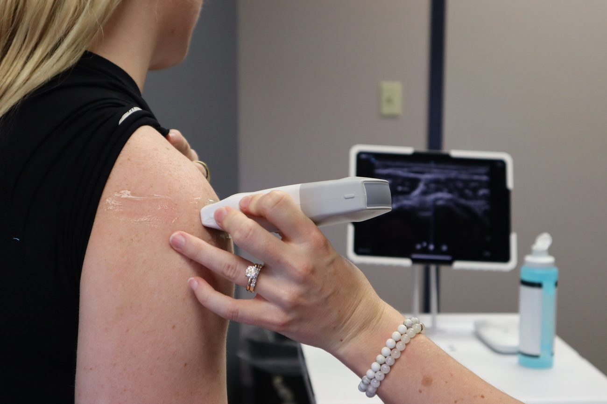
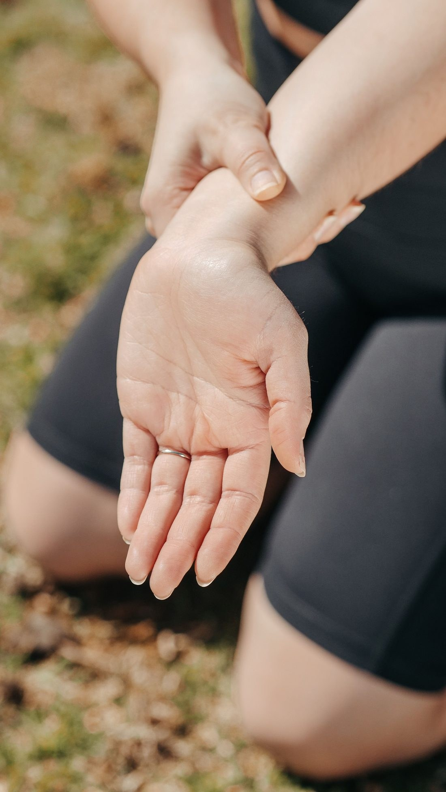

Detailed, real-time imaging of tendons, joints, muscles and soft tissue, including lumps, hernia and wrist assessment, reported to your physician.

Musculoskeletal ultrasound provides detailed, real-time imaging of tendons, ligaments, muscles, joints and soft tissue.
At Oshawa Advance Imaging, we provide musculoskeletal and soft tissue ultrasound for patients and referring physicians across Durham Region. Because ultrasound captures images in real time, it is especially useful for assessing structures as they move, and for evaluating lumps, swelling and suspected hernias.
Your physician may request this imaging for a range of reasons, including:

Most musculoskeletal and soft tissue ultrasound exams require no special preparation. We recommend wearing comfortable clothing that allows the area being examined to be easily accessed.

Please bring your valid health card and your physician's requisition. During the exam, a water-based gel is applied and a probe is moved over the area being imaged. For many musculoskeletal scans, the technologist may ask you to move the joint or area so structures can be assessed in real time.
Your images are reviewed and interpreted by qualified professionals, and a report is sent to your referring physician. Please follow up with your physician to discuss your results and any recommended next steps.
It is the use of ultrasound to image soft tissue structures such as tendons, ligaments, muscles and joints, often in real time as you move the area being examined.
Most musculoskeletal ultrasound exams require no special preparation. Wear comfortable clothing that allows easy access to the area being imaged.
Yes. Ultrasound can be used to assess the wrist and structures associated with the carpal tunnel, including the median nerve, when requested by your physician.
The exam is generally comfortable. The technologist may apply gentle pressure with the probe over the area being examined.
Your images are interpreted by qualified professionals and a report is sent to your referring physician to review with you.
This website is for general information only and does not replace medical advice. Please speak with your physician or healthcare provider regarding your medical concerns. Imaging results are interpreted by qualified professionals and sent to your referring physician.